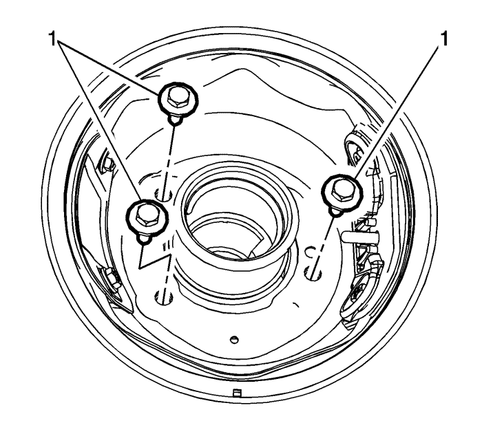
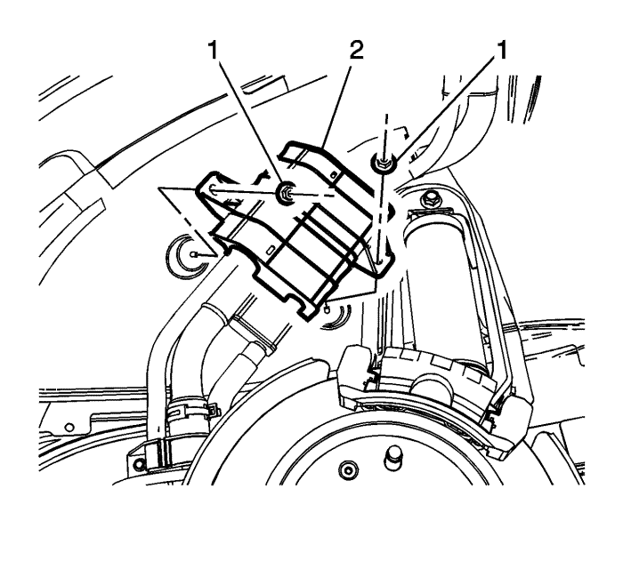
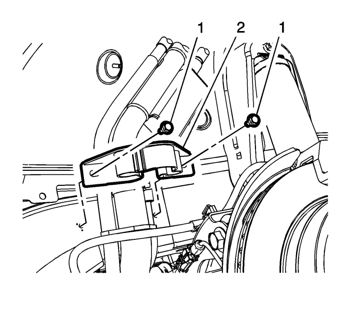
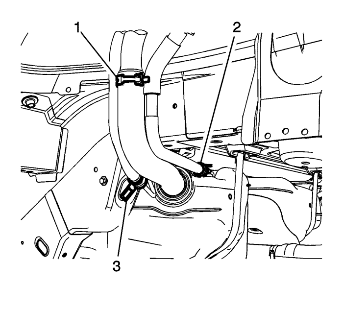

Sustitución del tubo de llenado del depósito de combustible
Procedimiento de desmontaje
Advertencia : No permita que nadie fume ni use llamas abiertas en la zona donde se esté trabajando con combustible o en el sistema EVAP. Cuando se esté haciendo cualquier trabajo en el sistema de combustible, desconecte el cable negativo de la batería, salvo en aquellas comprobaciones donde haga falta tensión de batería.
- Desmonte el tapón de llenado de combustible.

- Quite los pernos (1) que unen la carcasa del tubo de llenado del depósito de combustible al tubo de llenado del depósito de combustible.
- Vacíe el depósito de combustible. Consultar Drenaje del depósito de combustible .
- Desmonte la rueda trasera izquierda. Consultar Desmontaje y montaje de la rueda y el neumático .
- Desmonte el panel de revestimiento del paso de la rueda trasera izquierda. Consultar Sustitución del panel de revestimiento del paso de rueda trasero .

- Quite las tuercas del protector del tubo de llenado de combustible (1) y el protector (2).

- Quite los pernos del soporte del tubo de llenado del depósito de combustible (1) y extraiga el soporte (2).

- Afloje la abrazadera del tubo flexible de llenado del depósito de combustible (1) y la abrazadera del tubo flexible del respiradero de combustible (2), y desconecte los tubos flexibles del depósito de combustible.
- Desmonte el conjunto del tubo de llenado del depósito de combustible y del respiradero del vehículo.
Procedimiento de montaje
- Monte el conjunto del tubo de llenado del depósito de combustible y del respiradero en el vehículo.
- Vuelva a conectar el tubo de llenado del depósito de combustible (1) y el tubo flexible del respiradero de llenado de combustible (2) en el depósito de combustible.
Precaución: Consulte Precaución con las fijaciones en la sección Prólogo
- Coloque los pernos del soporte del tubo de llenado del depósito de combustible (1) y monte el soporte (2). Apriete los tornillos a 10 N·m (88 lb. pulg.).
- Monte el protector del tubo de llenado de combustible (2) y las tuercas (1). Apriete las tuercas a 10 N·m (88 lb. pulg.).
- Coloque los pernos (1) que unen la carcasa del tubo de llenado del depósito de combustible al tubo de llenado y apriete a 6 N·m (53 lb pulg.).
- Monte el panel de revestimiento del paso de la rueda trasera izquierda. Consultar Sustitución del panel de revestimiento del paso de rueda trasero .
- Monte la rueda trasera izquierda. Consultar Desmontaje y montaje de la rueda y el neumático .
- Monte el tapón de llenado de combustible.
| © Copyright Chevrolet Europe. All rights reserved |